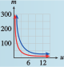

Subsection 5.2 Using the Basic Functions as Models
In this section, we consider some situations that can be modeled by the basic functions. Example 5.2.5 illustrates an application of the function \(f (x) =\sqrt{x}\text{.}\)
Example 5.2.5.
The speed of sound is a function of the temperature of the air in kelvins. (The temperature, \(T\text{,}\) in kelvins is given by \(T = C + 273\text{,}\) where \(C\) is the temperature in degrees Celsius.) The table shows the speed of sound, \(s\text{,}\) in meters per second, at various temperatures, \(T\text{.}\)
| \(T ~ (\degree K)\) | \(0\) | \(20\) | \(50\) | \(100\) | \(200\) | \(400\) |
| \(T ~ (\text{m/sec})\) | \(0\) | \(89.7\) | \(141.8\) | \(200.6\) | \(283.7\) | \(401.2\) |
- Plot the data to obtain a graph. Which of the basic functions does your graph most resemble?
- Find a value of \(k\) so that \(s = kf(T)\) fits the data.
- On a summer night when the temperature is \(20\degree\) Celsius, you see a flash of lightning, and \(6\) seconds later you hear the thunderclap. Use your function to estimate your distance from the thunderstorm.
-
The graph of the data is shown below. The shape of the graph reminds us of the square root function, \(y = \sqrt{x}\text{.}\)

- We are looking for a value of \(k\) so that the function \(f(T) = k \sqrt{T}\) fits the data. We substitute one of the data points into the formula and solve for \(k\text{.}\) If we choose the point \((100, 200.6)\text{,}\) we obtain\begin{equation*} 200.6 = k \sqrt{100 } \end{equation*}and solving for \(k\) yields \(k = 20.06\text{.}\) We can check that the formula \(s = 20.06 \sqrt{T} \) is a good fit for the rest of the data points as well. Thus, we suggest the function\begin{equation*} f (T ) = 20.06\sqrt{T} \end{equation*}as a model for the speed of sound.
-
First, we use the model to calculate the speed of sound at a temperature of \(20\degree\) Celsius. The Kelvin temperature is
\begin{equation*} T = 20 + 273 = 293 \end{equation*}so we evaluate \(s = f (T )\) for \(T = 293\text{.}\)
\begin{equation*} f (293) = 20.06\sqrt{293}\approx 343.4 \end{equation*}Thus, \(s\) is approximately 343.4 meters per second.
The lightning and the thunderclap occur simultaneously, and the speed of light is so fast (about 30,000,000 meters per second) that we see the lightning flash as it occurs. So if the sound of the thunderclap takes \(6\) seconds after the flash to reach us, we can use our calculated speed of sound to find our distance from the storm.
\begin{equation*} \begin{aligned}[t] \text{distance} \amp= \text{speed} \times \text{time} \\ \amp = (343.4\text{ m/sec}) (6 \text{ sec}) = 2060.4 \text{ meters} \end{aligned} \end{equation*}The thunderstorm is \(2060\) meters, or about \(1.3\) miles, away.
Checkpoint 5.2.6.
The ultraviolet index (UVI) is issued by the National Weather Service as a forecast of the amount of ultraviolet radiation expected to reach Earth around noon on a given day. The data show how much exposure to the sun people can take before risking sunburn.
| UVI | \(2\) | \(3\) | \(4\) | \(5\) | \(6\) | \(8\) | \(10\) | \(12\) |
| Minutes to burn (more sensitive) |
\(30\) | \(20\) | \(15\) | \(12\) | \(10\) | \(7.5\) | \(6\) | \(5\) |
| Minutes to burn (more sensitive) |
\(150\) | \(100\) | \(75\) | \(60\) | \(50\) | \(37.5\) | \(30\) | \(25\) |
Plot \(m\text{,}\) the minutes to burn, against \(u\text{,}\) the UVI, to obtain two graphs, one for people who are more sensitive to sunburn, and another for people less sensitive to sunburn. Which of the basic functions do your graphs most resemble?
For each graph, find a value of \(k\) so that \(m = k f(u)\) fits the data.
-

The graphs resemble \(f (x) = \dfrac{1}{x}\text{.}\)
More sensitive: \(k = 60\text{,}\) Less sensitive: \(k = 300\)
At this point, a word of caution is in order. There is more to choosing a model than finding a curve that fits the data. A model based purely on the data is called an empirical model. However, many functions have similar shapes over small intervals of their input variables, and there may be several candidates that model the data. Such a model simply describes the general shape of the data set; the parameters of the model do not necessarily correspond to any actual process.
In contrast, mechanistic models provide insight into the biological, chemical, or physical process that is thought to govern the phenomenon under study. Parameters derived from mechanistic models are quantitative estimates of real system properties. Here is what GraphPad Software has to say about modeling:
"Choosing a model is a scientific decision. You should base your choice on your understanding of chemistry or physiology (or genetics, etc.). The choice should not be based solely on the shape of the graph.
"Some programs . . . automatically fit data to hundreds or thousands of equations and then present you with the equation(s) that fit the data best. Using such a program is appealing because it frees you from the need to choose an equation. The problem is that the program has no understanding of the scientific context of your experiment. The equations that fit the data best are unlikely to correspond to scientifically meaningful models. You will not be able to interpret the best-fit values of the variables, and the results are unlikely to be useful for data analysis."
(Source: Fitting Models to Biological Data Using Linear and Nonlinear Regression, Motulsky & Christopoulos, GraphPad Software, 2003)